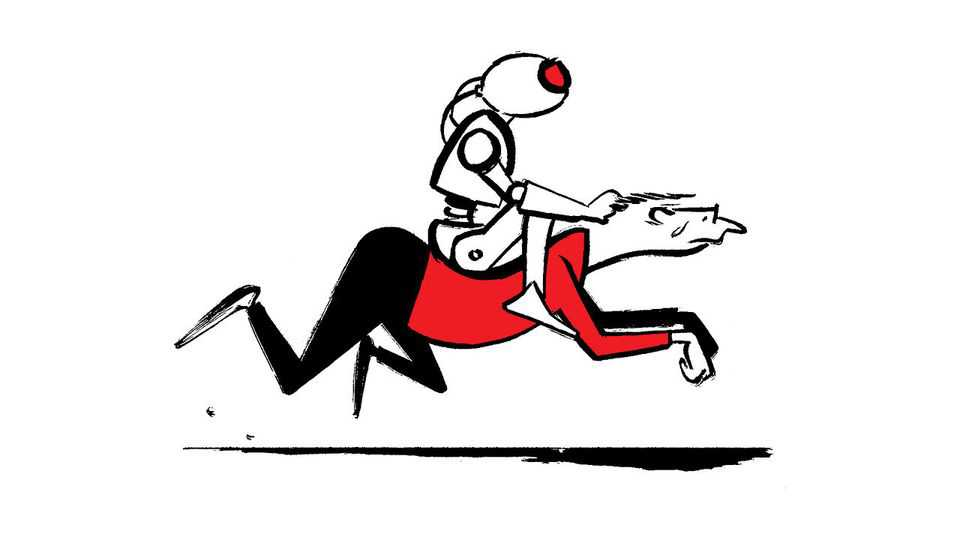

LLMs v palaeontology
Also this week, publications, film critics, preparing for emergencies, London traditions, accounting

Nov 5th 2026
Letters are welcome via email to letters@economist.comFind out more about how we process your letter
I work for an AI lab as a scientist and read your piece on how AI companies are not merely providing a tool for discovery but choosing to wield it themselves (“A scientific revolution”, October 17th). My field of palaeontology uses large language models to investigate the evolution of fossils by mining the formal descriptions of species from literature that often extends back to the 18th century. How fossils are formally described (their taxonomy) is key to their identification and use.
The trouble is that LLMs are not good at understanding very old literature and how terminology, measurement and concepts of species and evolution have changed over two centuries. This means an enormous amount of work for human scientists in cleaning the data before the LLM can be put to work. It’s the same for other descriptive, observational sciences like botany and zoology, where written descriptions and evidence are a big part of the accumulated knowledge of humanity codified in legacy scientific literature.
The truth is that the low hanging fruit of AI, the high-quality data already in number form, collected recently in genomics and physics, is easy, but human elbow grease is what will lubricate the older sciences.
Mike StephensonVisiting professor in palaeontologyNanjing University
“Stop the slop” (October 17th) reports that roughly 90% of papers submitted to “predatory journals” are AI-generated. However, you characterise these journals simply as being “where authors pay for publication”. There is a brief but critical distinction. Publication fees are neither exclusive to predatory outlets nor inherent to open-access publishing. Many reputable subscription and open-access journals, including those published by non-profit learned societies such as the Federation of European Biochemical Societies, charge legitimate processing or page fees to cover operational costs and support the scientific community.
The defining issue is not that authors pay, but whether rigorous peer review and high-quality editorial oversight are provided in return.
Dietmar MansteinEditorFEBS LettersHanover, Germany
“Are film critics as snooty and out of touch as people think?”, you ask (October 24th). You confuse subjective opinion with objective fact. Neither ten nor 1,000 subjective opinions that agree with one another add up to one objective judgment. So when you say we should “pity the reviewer” who dismissed “Citizen Kane” as “well-intentioned, muddled, amateurish” you tacitly assume that an objective review is possible, implying that any review that does not conform to expert opinion is wrong. Naturally, the great and good in every field like to think their judgments are more informed or even just better than those of hoi polloi. What they have to say may well be more informative and interesting than Kev’s waffle down the pub. But at the end of the day their remarks are just as subjective.
As for “Citizen Kane”, context is everything, especially considering what other films were being made more than 80 years ago. I could never see what all the fuss was about.
Patrick PowellSt Breward, Cornwall
Thank you for drawing attention to Britain’s preparedness for major emergencies and conflict (“Dad’s Army returns”, October 17th). However, the image you presented of a large, uniformed civil-aid corps undermines the principle of a whole-society approach. Berets, ranks and bands may appeal to some volunteers, but they reinforce a notion of civil defence as an eccentric, quasi-military pursuit.
Moreover, building preparedness around a centrally directed corps reproduces the very dependencies that a resilient society must be able to withstand. Major, cascading emergencies, such as natural hazards, infrastructure failures or armed attacks, disrupt communications, transport, leadership and logistics. An organisation dependent on those systems will struggle precisely when it is most needed.
Whole-society resilience starts with different questions. What can continue to function when organised assistance is unavailable? Can households meet their essential needs without immediate outside help? Can neighbours support one another? This approach recognises the strengths already present in communities. Practical skills, professional expertise and local knowledge exist far beyond the organisations formally designated to respond. Adults who are able to do so should be encouraged and equipped to take responsibility for themselves and those around them.
Dr Frank LongGeneral secretaryInstitute of Civil Protection and Emergency ManagementCamberley, Surrey
Here at All Hallows by the Tower (the oldest church in the City of London dating from 675AD) we have our share of the “lovely nonsense” of traditions (“Standing on ceremony”, October 17th). One dates from 1380 and involves paying an annual fine of one red rose to the Lord or Lady Mayor on a velvet cushion. On Ascension Day we “beat the bounds” of the parish to demonstrate where our boundaries lie. Given that we proudly stand next to the Tower of London this involves a ceremonial skirmish with the resplendently dressed, and splendidly armed, Beefeaters. As the sides meet, much bellowing, roaring and stick waving ensues, typically in front of many bemused tourists. But no blood is spilt and both sides retire with honours. Nonsense? Absolutely not. It’s a reminder that the Church of England gives everyone in its land a place to worship, be baptised, married or buried. Lovely? Absolutely.
Reverend Nicol KinradeVicar of All Hallows by the TowerLondon
Schumpeter (October 17th) did an excellent job of describing the convoluted financial reporting of AI firms. It reminded me of Charlie Munger, a former vice-chairman of Berkshire Hathaway, who dismissed EBITDA as “bullshit earnings”. If he were alive today, he might well create a more suitable label, like “totally made-up bullshit earnings”.
Scott SimmonsHighlands Ranch, Colorado